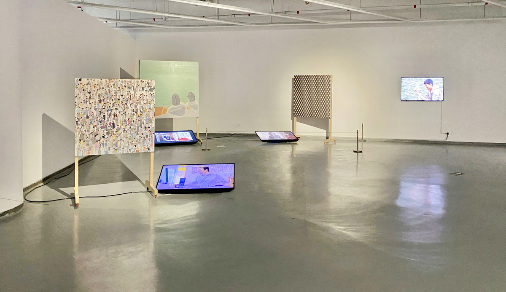
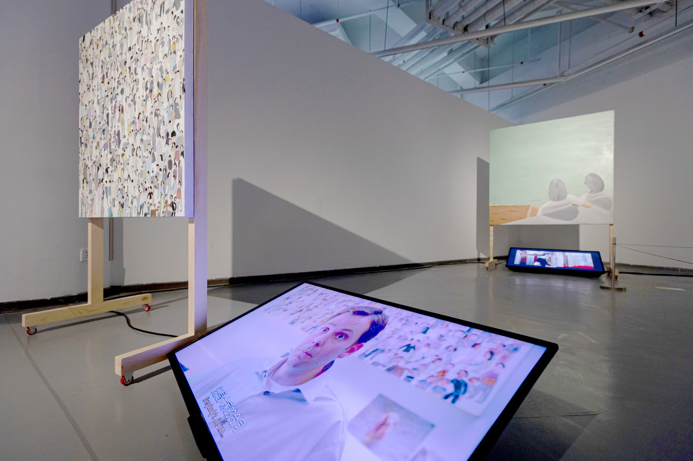
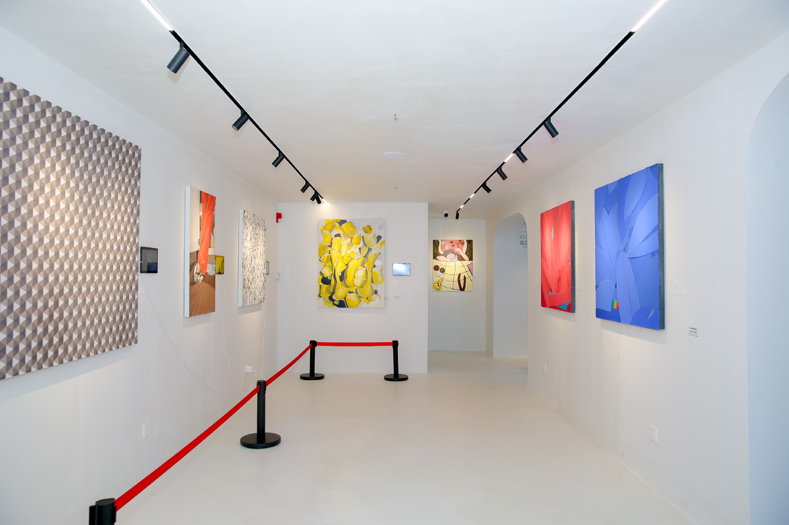
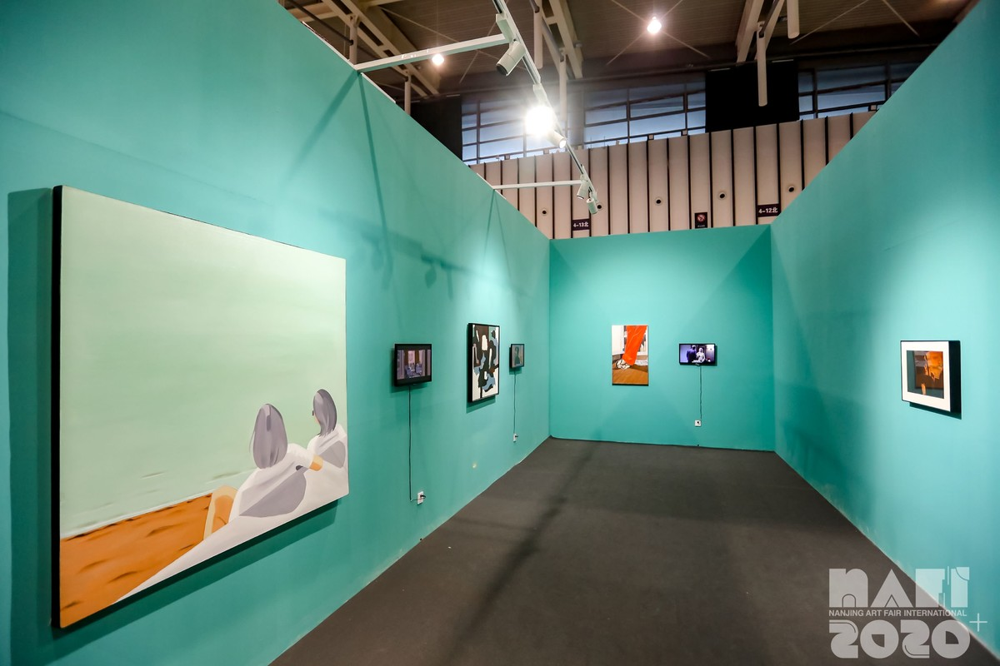
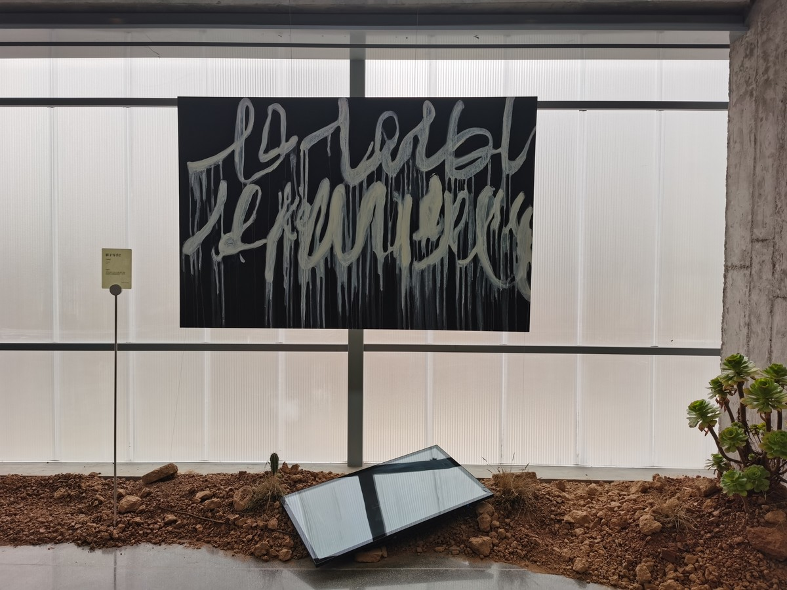

Home
Works
Curatorial & Public
Writing & Research
Bio & CV
sHI Wanwan
Artist
Home
Works
Curatorial & Public
Writing & Research
Bio & CV
图像帝国计划
展览现场

中国当代艺术新学院方式：北京电影学院新媒体艺术实验室特展，金鸡湖美术馆，苏州，2022
《图像帝国》是一组持续多年的艺术计划。艺术家从电影场景中寻找那些作为背景、道具或视觉线索出现的绘画，并将其重新复制为真实的绘画作品，再与原电影片段并置展出。作品以一种轻微幽默的方式，让原本隐藏在影像叙事背后的图像重新显现出来，也让电影、绘画与观看之间形成新的关系。它既是对图像时代的一次温和回应，也是一种关于“图像如何被观看、复制和再次进入现实”的提问。

金鸡湖美术馆，苏州

贝恩福迈艺术中心，苏州

南京国际艺术博览会金鹰美术馆特别项目，南京

山灰艺术社区，西安
目录
时尚女魔头
逍遥法外
影子写手2
泰迪熊
嘻哈帝国
摩登家庭 1
考试过关的艺术
暴君